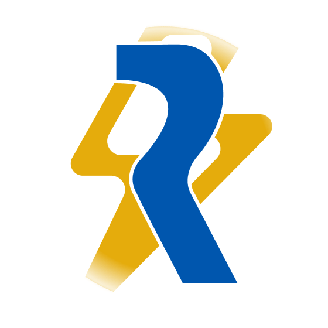

Seeking an Internship
Seeking a 4 to 6-month AI / ML Research or Engineering Internship
Available from mid-April / May 2027 (EIC Stage coop international eligible in Canada & global).
M.Sc. in Data Science at École Polytechnique • Engineering Student at Télécom SudParis
Graduate student in mathematics, machine learning, and computer science, building applied AI pipelines and open-source software. Curious, creative, and a hands-on generalist.
Why jsonlines everywhere? JSON is the first data format I've heard of and love using. Also, and maybe in the first place, it's a nearly perfect anagram of my real name.
From-scratch tensor operations, custom scikit-learn estimators, cross-validation harnesses, and proximal optimization routines developed alongside the École Polytechnique M2DS track.
September 2026
Travel Manager — Hackathon X-IA 2026
Multi-agent B2B travel orchestrator built at the École Polytechnique AI Hackathon, combining OpenAI structured extraction, live travel quotes, multi-calendar constraint satisfaction, and disruption recovery.
July 2026
Sentinel
Puppeteer automation and Model Context Protocol (MCP) framework that records browser interactions, generalizes them into YAML extraction schemas via LLMs, and self-repairs broken selectors.
June 2026
Zero-Shot Semantic Recommendation Engine
End-to-end NLP classification pipeline using Hugging Face Transformers and FastAPI to match live news articles with social impact initiatives in real time.
February 2026

Reactif
Offline-first mobile cognitive aid and real-time clinical timekeeper for cardiopulmonary resuscitation (CPR) used by emergency medical teams (SAMU, SMUR), officially endorsed by the French Society of Emergency Medicine (SFMU).
July 2025
Industrial OCR Pipeline & Safran Git WebPart
Automated Python OCR pipeline for aeronautical maintenance documentation and custom TypeScript SharePoint Framework component connected to GitLab APIs at Safran Landing Systems.
July 2022
yNotes
Open-source mobile student life and grade-tracking client for French academic portals (Pronote, École Directe), scaling to over 10,000 downloads on iOS and Android.
June 2022
IR Analyzer — Prépa TIPE
Classes Préparatoires (MPSI/MP) TIPE research project performing automated grid colorimetry and temperature field extraction on thermal infrared imagery in Python.
June 2021
Pronote QR-Auth Decoder & ÉcoleDirecte.js
Open-source JavaScript and TypeScript client libraries providing AES QR-code authentication deciphering and typed REST API wrappers for French educational platforms.
Machine learning theory, convex optimization, deep learning for computer vision, natural language processing & LLMs, audio/signal AI, and data stream processing.
Computer architecture, operating systems, distributed networks, statistical modeling, and continuous optimization (GPA 3.8/4.0). Finalist in the Concours Entreprendre Startup Competition (Project Ozy) and President of Club Xtreme.
Built and deployed a zero-shot semantic classification pipeline using Hugging Face Transformers with an asynchronous Python backend and embeddable web widget.